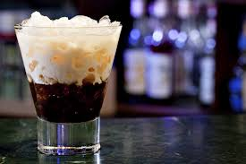

Licor de café

Ingredientes:
- 2-Taza de Azúcar
- 1- Taza de agua
- 4-limones
- 1-Naranja
- 50-Gramos de café molido
- 1 1/2- Copa de Ron
Procedimiento:
1-Quitar la cascara de los limones y naranja, quitar tambien
la parte blanca y luego cortarlas en trozos.
2-Poner el agua y el azúcar en una sarten,
agregar los trocitos de limones y naranjas y cocer a fuego
medio hasta lograr una concistencia tipo almibar luego
se separa del fuego y se agrega
el café y el ron, esta mezcla se coloca en un recipiente de
cristal bien cerrado durante 6 dias.
3- pasado este tiempo
se filtra y se embotella.
Tiempo de preparación: 6 dias.
Nivel de Dificultad: Medio.
Porciones: 5.